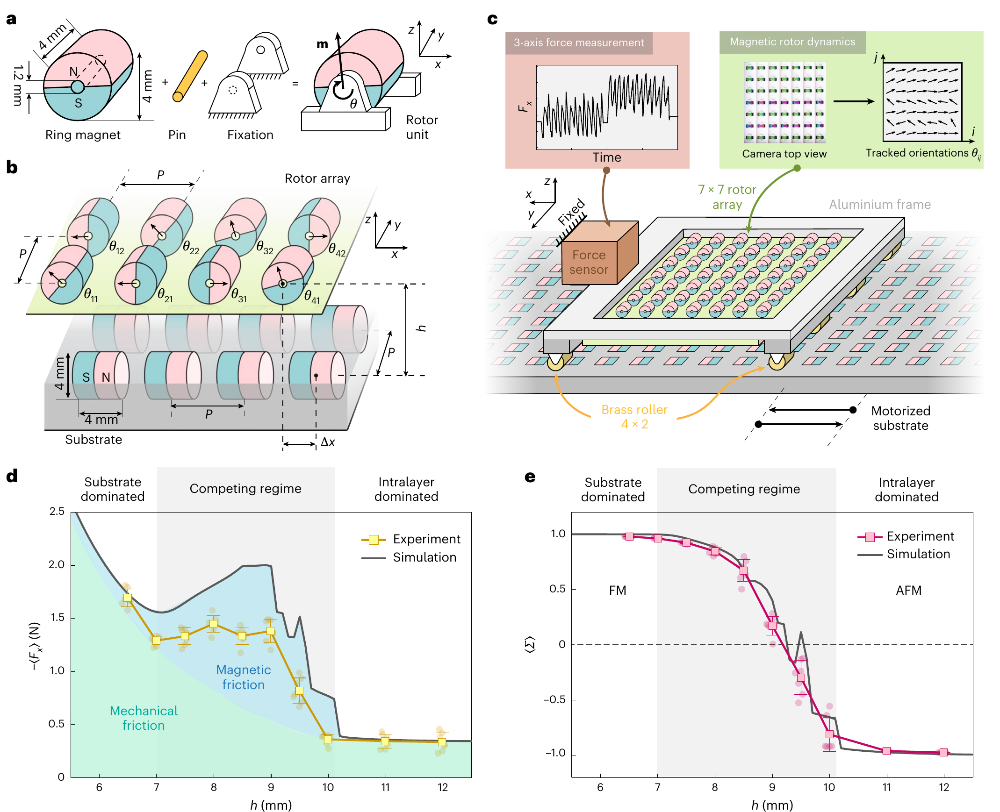
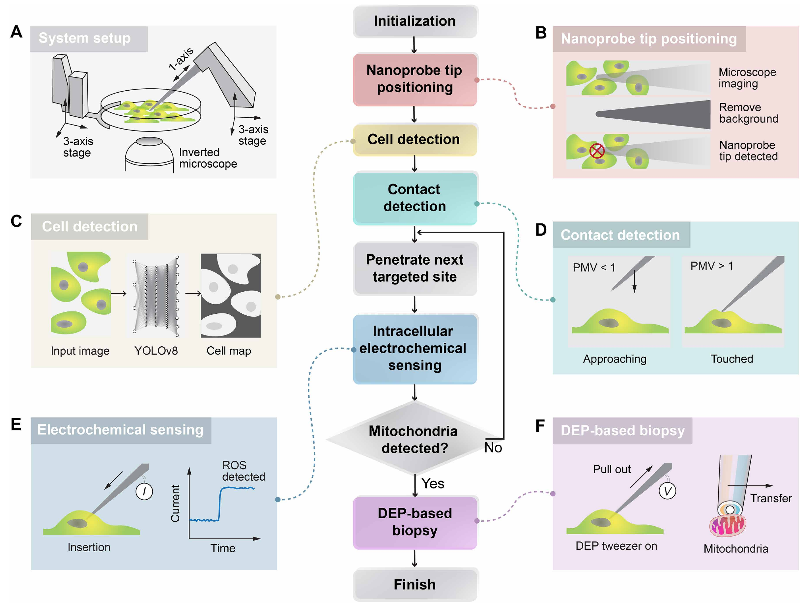
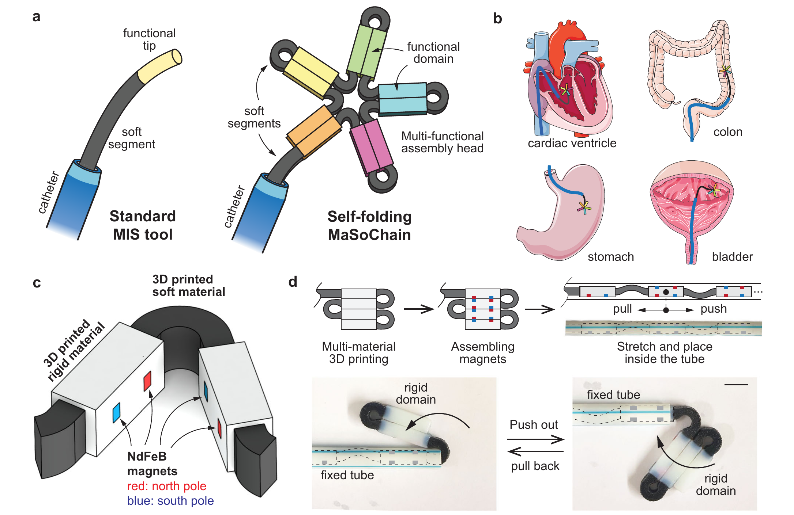

RMD LAB / HKUST
From physical principles to future robotic technologies.
We study how structure, materials, interactions and dynamics can create new functions in robotic and physical systems.
Led by Prof. Hongri (Richard) Gu, the lab works across physical science and engineering: resolving mechanisms, building new capabilities and starting from consequential real-world constraints.

A structured interaction becomes a rapid transport mechanism. Explore the story
OUR CENTRAL QUESTION
How can physical principles, materials and robotic systems create functions that conventional engineering cannot easily achieve?
A SCIENCE-ENGINEERING SPECTRUM
Three ways into a problem.

Resolve the physics.
Make hidden mechanisms and collective dynamics measurable.

Build a new capability.
Turn a physical principle into a material, mechanism or platform.

Work from a real constraint.
Translate a difficult application into a question we can test.
HOW WE WORK
A working prototype is the beginning of an explanation.
Why does it work? What determines its performance? What is the fair comparison? What can someone else generalize from it?
Our approach to researchRESEARCH STORIES
Different problems. A shared standard of evidence.
Understand · 2026
Magnetic friction
Explaining an unexpected friction curve.
Read the storySolve / Create · 2025
Mitochondrial biopsy
Sense, trap and extract an organelle without a fluorescent guide.
Read the storyCreate · 2019
Magnetic quadrupoles
Changing the interaction opens a new design space.
Read the story
Solve / Create · 2023
MaSoChains
Small during insertion. Functional after deployment.
Read the storyJOIN THE LAB
Build. Question. Understand.
We welcome researchers who enjoy making physical systems, learning from experiments and taking intellectual ownership of a difficult question.
What we look for